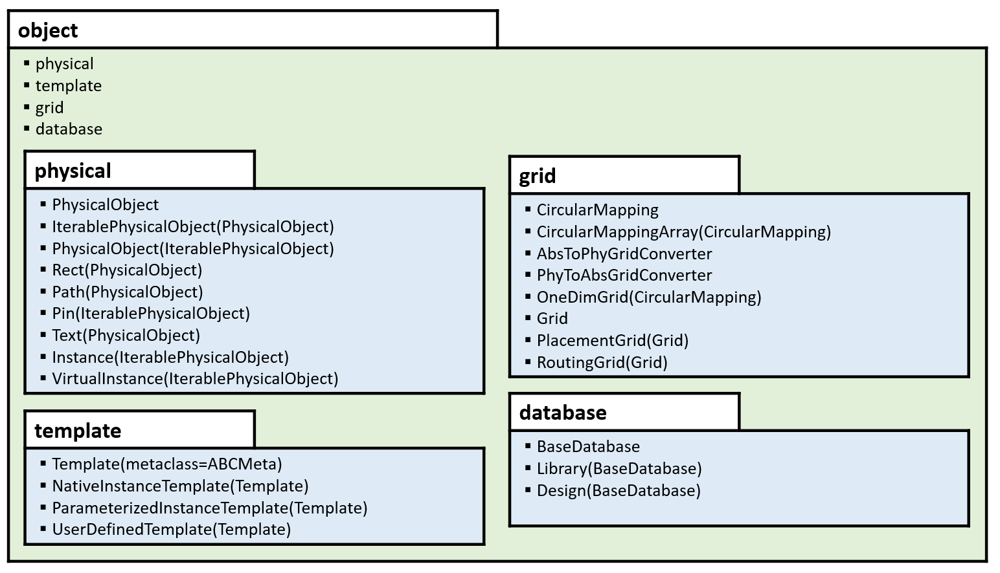

laygo2 User Guide
Introduction
This user guide is provided to help the use of LAYGO2, a layout scripting and automatic generation framework. LAYGO, the previous version of LAYGO2, is developed for one of layout generation engines in Berkeley Analog Generator2 (BAG2), and LAYGO2 extends the LAYGO’s functions and capabilities. LAYGO2 can be launched either in standalone mode or in combination with BAG2.
LAYGO2 is optimized to IC layout generations in the following conditions.
Automations and reuse of layout design flow.
Parameter-based layout generation.
Layout in advanced processes (e.g. FinFET CMOS).
Code-based layout generation.
The major features supported by both LAYGO and LAYGO2 are summarized below:
Template and grid-based device placements: LAYGO enhances the portability and reusability of layout generation process by using abstract grids and instances (templates), without directly dealing with physical instances and coordinates.
Instance placements based on relative information: The process portability is maximized by enhancing the level of abstraction by utilizing relative information between instances for their placements.
Grid-based wire routing: The wire routing process is abstracted as well, by placing the interconnects on process-independent routing grids.
laygo2 has the following improvement items over the original laygo.
Enhanced object-oriented features: The module dependency is minimized to enhance the process portability and reusability. The layout generation process is fully described in object-oriented ways. For examples, classes defined in the physical module can be used independently, and new template types can be easily implemented by inheriting the base Template class.
Integer-based grid computations: laygo originally used real-number-based grid systems. laygo2 converted all grid systems to integer-based ones to avoid floating-point operations. The integer number coordinates are converted to real numbers during the final export phase.
Advanced template generation: In additional to the single-instance-based template (NativeInstanceTemplate), laygo2 implements various ways of template types, including parameterized-instance-based template (ParameterizedInstanceTemplate) and user-defined templates (UserDefinedTemplate). laygo2 supports inheritance of the primitive template class (Template) for new template definitions.
Advanced instanced and grid indexing: Instance and grid objects are tightly integrated to Numpy array objects, to support advanced indexing and slicing functions. The grid objects especially extend the Numpy array to implement unlimited indexing over their defined ranges.
Code quality enhancement and refactoring
(on-going) More documents and tests added
(on-going) Generator code separated from the main framework
Simple examples
Several examples are introduced in Simple examples to help users understand the basic behavior of laygo2.
laygo2 structure
The structures of packages and modules in laygo2 are described in laygo2 structure.

laygo2 design flow
Load technology parameters, primitive templates, and grids.
Generate instances from templates.
Place the generated instances.
Route wires and vias between the instances’ terminals.
Pin creation.
Export the generated design in proper formats.
(Optional) export the design as a new template.
Developer list
See the github repository README for the full list of developers.
License
laygo2 is distributed under the BSD 3-Clause License.